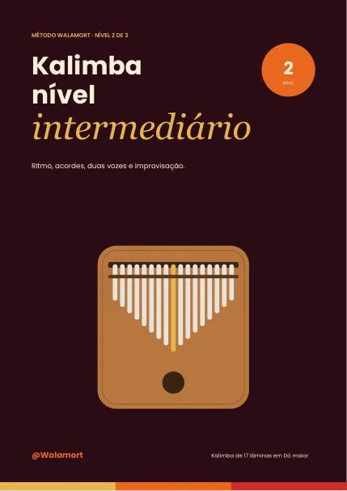
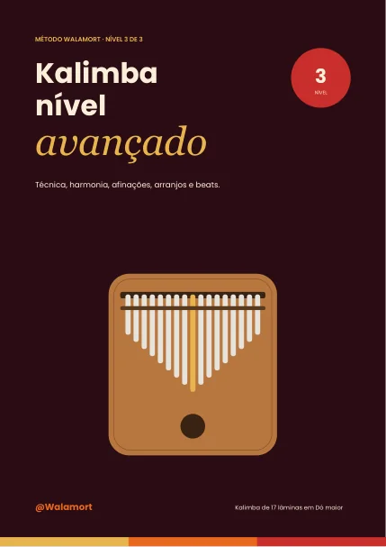
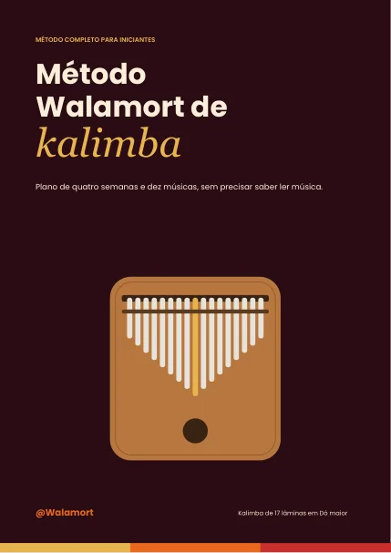
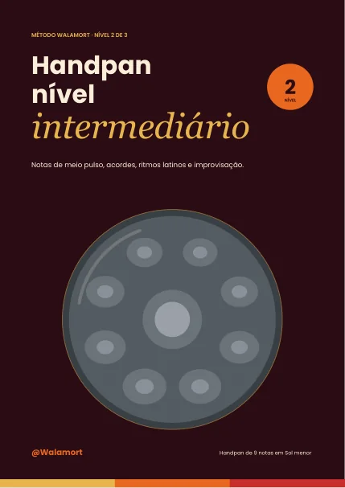
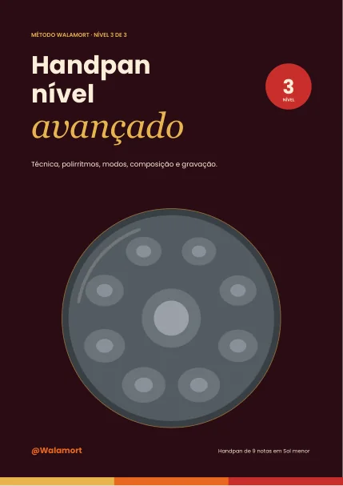
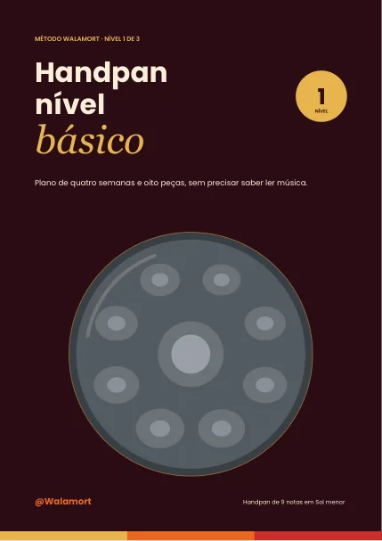
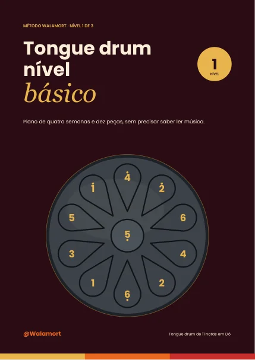
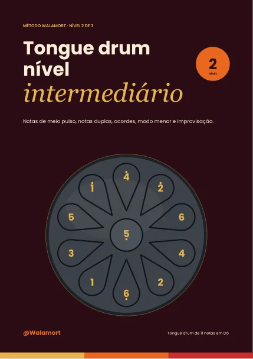
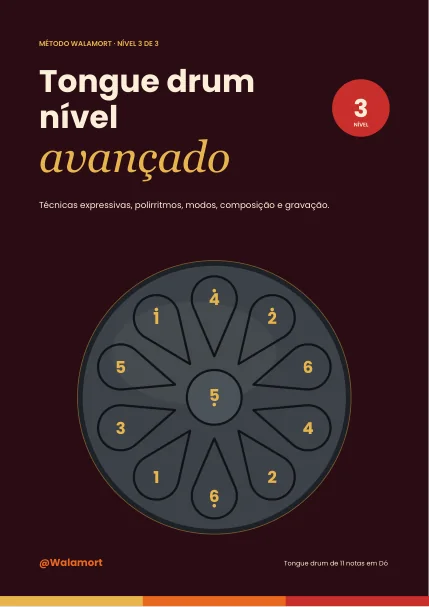
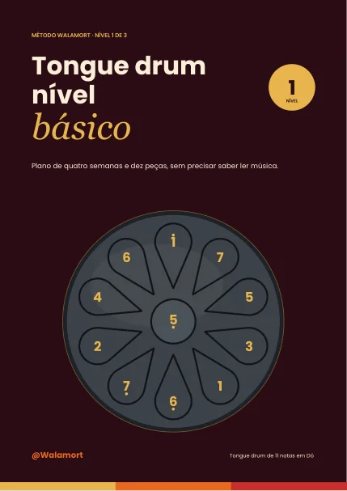

ES · EN · PT-BR
ES · EN · PT-BRKalimba · Básico
Quatro semanas, dez músicas, ritmo, acordes e primeiros efeitos.
19 páginas · 17 lâminas em Dó maior.
PDF incluídos: Português (Brasil) · English · Español
WALAMORT · MÉTODOS E CADERNOS
Escolha seu instrumento e seu nível, explore um guia gratuito e encontre o próximo passo.
Explorar o catálogo
Uma compra do produto inclui os três idiomas em arquivos separados. Confira preço final, moeda e condições na Hotmart. O nome do produto pode aparecer em espanhol.
Os cadernos criativos piloto e suas amostras continuam em espanhol. As edições completas ainda não estão à venda.
ES · EN · PT-BRQuatro semanas, dez músicas, ritmo, acordes e primeiros efeitos.
19 páginas · 17 lâminas em Dó maior.
PDF incluídos: Português (Brasil) · English · Español

ES · EN · PT-BRSete acordes, duas vozes, acompanhamento e improvisação pentatônica.
17 páginas · 17 lâminas em Dó maior.
PDF incluídos: Português (Brasil) · English · Español

ES · EN · PT-BRLeitura de partitura, afinações alternativas, harmonização, arranjos e beats.
17 páginas · 17 lâminas em Dó maior.
PDF incluídos: Português (Brasil) · English · Español

ES · EN · PT-BROs três níveis: vinte músicas e peças, das primeiras notas aos próprios arranjos.
53 páginas · 17 lâminas em Dó maior.
PDF incluídos: Português (Brasil) · English · Español
ES · EN · PT-BRPostura, técnica, grooves e oito peças originais para começar passo a passo.
19 páginas · 9 notas em Sol menor.
PDF incluídos: Português (Brasil) · English · Español

ES · EN · PT-BRNotas fantasma, gu, acordes, progressões, cumbia, salsa e seis peças.
18 páginas · 9 notas em Sol menor.
PDF incluídos: Português (Brasil) · English · Español

ES · EN · PT-BRPolirritmos, compassos irregulares, modos, composição e gravação com quatro peças.
18 páginas · 9 notas em Sol menor.
PDF incluídos: Português (Brasil) · English · Español

ES · EN · PT-BROs três níveis e dezoito peças originais: técnica, criação e gravação.
55 páginas · 9 notas em Sol menor.
PDF incluídos: Português (Brasil) · English · Español

ES · EN · PT-BRQuatro semanas e dez músicas e peças: baquetas, dedos, duas mãos e improvisação.
19 páginas · 11 notas em Dó, sem Si.
PDF incluídos: Português (Brasil) · English · Español

ES · EN · PT-BRNotas duplas, acordes, baixo e melodia juntos, modo menor e improvisação.
16 páginas · 11 notas em Dó, sem Si.
PDF incluídos: Português (Brasil) · English · Español

ES · EN · PT-BRTrêmolo, abafamento, grooves, polirritmos, composição e gravação.
16 páginas · 11 notas em Dó, sem Si.
PDF incluídos: Português (Brasil) · English · Español

ES · EN · PT-BROs três níveis e vinte e uma músicas e peças para o modelo diatônico completo com Si.
51 páginas · 11 notas em Dó, com Si.
PDF incluídos: Português (Brasil) · English · Español
As amostras piloto de harmonia, composição, improvisação e produção continuam em espanhol. As edições completas ainda estão em revisão.
Explorar amostras em espanhol →Guias completos de dez páginas para handpan e tongue drum. São gratuitos; não é preciso comprar para baixar.
10 páginas · Português do Brasil
Baixar guia PDF →10 páginas · Português do Brasil
Baixar guia PDF →Você também pode explorar o guia introdutório disponível.
Baixar guia · Português →Os métodos avulsos usam um modelo de 11 notas em Dó sem Si; o pacote usa Dó maior completo, incluindo Si. São mapas diferentes. Confira as notas reais do instrumento antes de escolher.